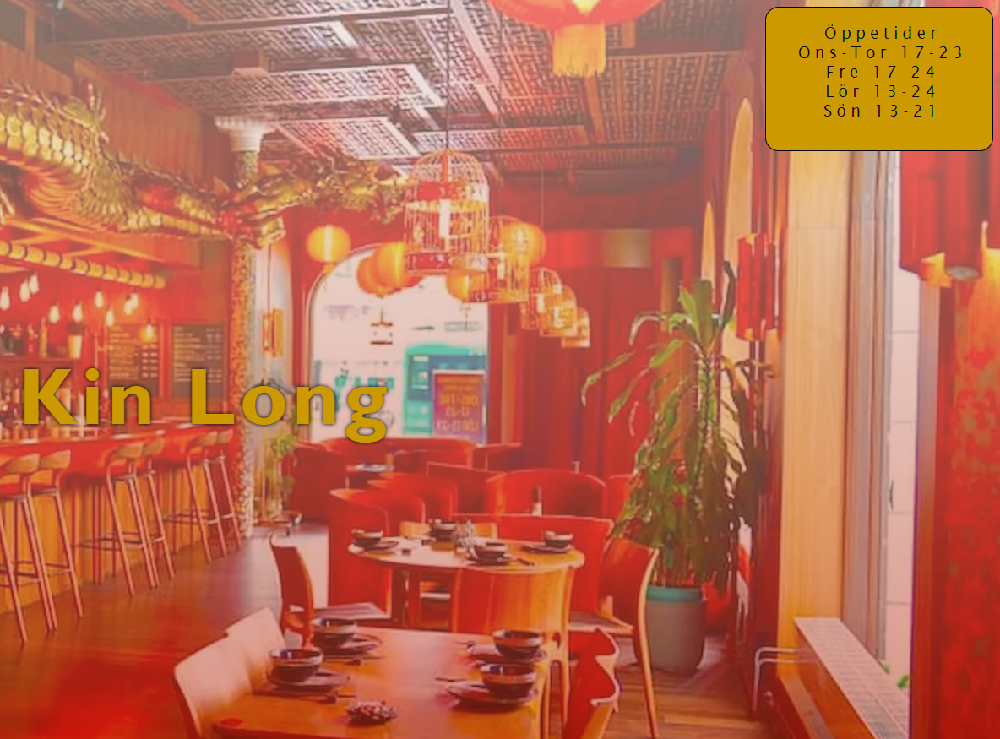

Restaurang Kin Long är ett av mina allra senaste projekt. Uppgiften var att välja en lokal restaurang där man ansåg att deras webbsida kunde behöva en förbättring. I uppgiften fanns det specifika krav på vad som behövdes ha med. Vilket gjorde att jag fick lära mig många nya saker. Jag skapade en navbar så att man kan ta sig genom de olika sidorna utan problem.
Restaurang hemsida


I menyn skapade jag kort för varje produkt som man kan köpa i restaurangen. Jag gjorde även en animation så när man hovrar över kortet så förstoras bilden på kortet.

För att skapa ett formulär så använde jag mig av en div class med inputs och labels. I CSS-filen så skapade jag en grid med två olika kolumner. Jag använde mig även av responsiva enheter som vmax och rem.
I bakgrunden på första sidan har jag en stor bild på restaurangen i transparent form med hjälp av en linear-gradient och en url bild. Dök på problem då jag skulle skicka in uppgiften via github och bilderna inte kom med. Fick reda på att för att gå ur en mapp behöver man skriva ut ../ framför bilden.